21 CODE regions and 0 raster assets to review: 0 extract, 0 inpaint.
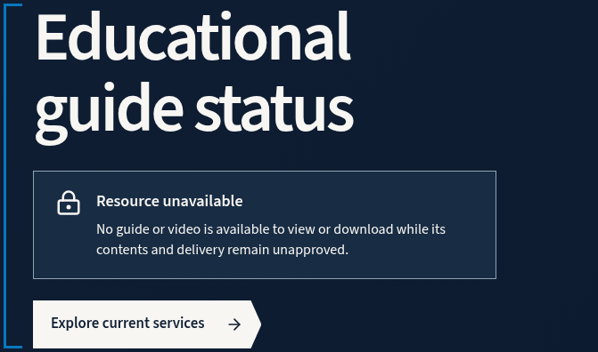
Use .b3-bracket pseudo-elements as an open electric-blue left bracket around the normal-flow hero copy; preserve the independent source rail below the two-column grid.
Render one live h1 in .b3-guide-intro, Source Sans 3 with max-width 15ch desktop and 12ch below 760px; use the existing responsive type scale.
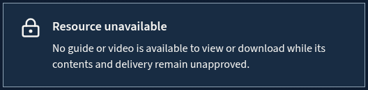
Render #resource-status as a flex group with a 30px Lucide lock (flex-shrink:0) and a min-width:0 text column, 1px #8fa4b5 border and #182c43 background. Mobile disclosure uses 18px type and 1.6 line-height.
Use the real /services anchor with the existing .b3-action treatment, mineral #f7f6f3 background, navy label and ArrowRight. Keep its 24px top margin, hover fill and visible focus outline.
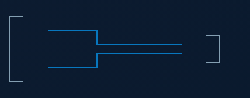
Draw the four existing open SVG paths in the 420x160 viewBox; use 2px non-scaling strokes, #849fb2 end brackets and #0877be paired steps. Width is min(100%,420px), then min(72%,252px) on mobile; no filled panel or raster.
Place the source-details span in the full-width blue .b3-guide-rail CSS flex row after a 48px desktop gap. Retain the 76px rail and the existing mobile rule hiding this secondary label.
Use the live #resource-summary anchor in the rail with ArrowDown and a 48px minimum hit height. On mobile preserve the link after the hero stack; do not turn it into an inactive label.
Render the live summary h2 in the left column of the 1.06fr/.94fr CSS grid; below 760px stack the columns with a 28px gap on the blue section field.
Use #important-boundary as a bordered flex notice with a 28px Lucide BookOpen, flex-shrink:0, and min-width:0 text column. Keep #8ed1f5 border and the tinted blue substrate; mobile text is 18px at line-height 1.6.
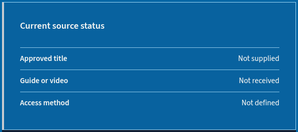
Build .b3-guide-source with a live dl of three rows, 32px padding, 4px silver left border and #08629f background. Each row is flex with 20px gap and a thin top rule; mobile removes minimum height and uses 18px row text.
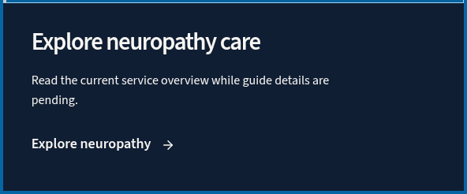
Render the service heading and paragraph in .b3-dark-panel with 34px 36px padding below the source table. Keep the semantic content live and subordinate to the source-status heading.
Use the /services/neuropathy anchor and ArrowRight in the dark panel, maintaining .b3-text-link styling and a 48px minimum hit area with hover and focus-visible states.
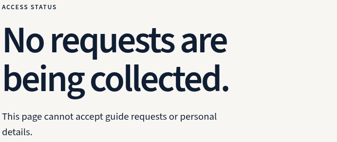
Place the Access status label and live h2 in the left column of the 1.1fr/.9fr CSS grid on mineral; stack below 760px with 36px gap. This is an unavailable state, not a form.
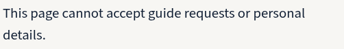
Keep the access explanation as a normal-flow paragraph below the heading; use existing body measure, then 18px and 1.6 line-height at mobile. Do not add input fields.
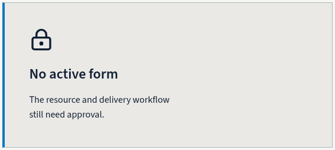
Render #form-status as a left-aligned live lock, strong status and paragraph inside a 1px #a9b5bb border, 4px blue left rail and #eae9e5 surface. Use 42px desktop padding, 30px mobile padding and a 40px Lucide lock.
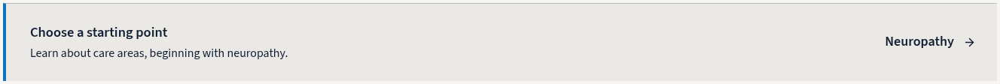
Build .b3-availability-foot as a flex decision rail with 32px top margin, 4px blue left border, 1px top rule and #eae9e5 background; mobile stacks the copy and destination link.
Keep the real /services/neuropathy link in the rail with ArrowRight, no extra top margin, and a 48px minimum hit area. Preserve the existing navy text and visible keyboard focus.
Use a live h2 with the open .b3-bracket treatment in the left column of the 1.05fr/.95fr CSS grid; retain the charcoal field and 88px section padding, then a single column and 72px padding on mobile.
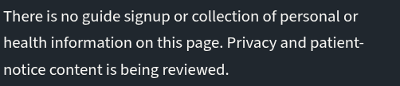
Render the privacy explanation at the shell edge as a normal-flow paragraph, max-width 48ch and line-height 1.62; mobile uses 18px at line-height 1.6. State only the current no-collection condition.
Use #privacy-status in a flex-column caveat with #27333c background, 3px blue left border and 24px 32px padding. The status itself is block with no extra border or background; mobile removes minimum height and uses 28px padding.
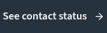
Keep the /contact anchor below the caveat with ArrowRight, 24px margin-top, align-self:start and a 48px minimum hit height. Preserve hover/focus states and status-only wording.
Canonical Guide reference-only closure — 2026-10-01. Independent KEEP: evidence/director-fallback-r1-art-review.md; closure provenance: provenance/reference-closure-r1.json. Four accepted owners and page.png are copied from the fallback; the original package is unchanged. Access549 / stitch2309; CSS144 / raster144.375; Q4 exact bytes and terminal112 remain. 21 CODE roles, zero production raster assets, no facility photography. Four stable section IDs and five source links remain; unavailable, no requests/signup, noindex,follow, sitemap exclusion remain exact. No runtime/registry/route/asset-retirement/scanner/Git/remote change or Site Review approval. Fresh controller independent source-contract verification is next; runtime implementation remains old until separately reviewed. page-draft.png and prompts/ are preserved history only; they impose no current copy, imagery or generation obligation. All relative evidence paths below resolve against design_refs/pages/educational-guide. The legacy design_assets Guide records are refreshed copies of this package. Historical fallback capture record (verbatim; candidate/pending/no-promotion statements describe the pre-closure state): Director fallback r1 — rendered candidate; acceptance pending fresh independent review. Authority: director8d4d0cbd; controller explicitly adopted review lines19–26 fallback. Pre-render amendment, manifest and targets were recorded together; hashes are in provenance/pre-render-contract.json. Access native549=ceil548.625, observed rail492.625, natural CSS exit56+privacy entry88=144; native raster interval144.375 includes exactly0.375 rounding. This supersedes the isolated560/504 exact raster targets and derived stitch/interval only; source/runtime geometry and visual gates remain. The only rendered CSS delta is two body[data-owner] background declarations: hero/summary #0666a5 and access #f7f6f3. Privacy #20272e stays unchanged. No section movement, spacer, forced height/padding, transform, screenshot crop/resize/raster fill. One local Chromium153.0.8010.12 launch captured Q1–Q3 full CSS viewports1536×624/624/549, DPR1, CSS screenshot scale. Working aptlib+syslibs LD_LIBRARY_PATH; no external browser requests or generative calls. Source Sans3 weights400/600 loaded; CDP confirms custom Source Sans3/Source Sans3 SemiBold. Q4 is original1536×512 KEEP reused byte for byte, not a fresh capture; provenance/q4-preserved.json contains source/hash/original geometry/font evidence. Native privacy budget88+224+88+112 remains. Natural heights615.890625/611.65625/548.625/400, every recorded section/region/text bound, geometry/style, text/link/control record and copied HTML match the old candidate. Content pixels above fractional section boundaries are identical; source components/CSS and original candidate hashes remain unchanged. Exact unscaled1536×2309 stitch and fresh1536×512 seam bands at624/1248/1797 pass owner and last256/first256 pixel equality. All four full owners, three bands and whole stitch were visually inspected by this worker; no clipped owner content or neighboring chrome observed. Unintended white reference-canvas strips are absent; intended blue/mineral/charcoal body canvas remains. Fresh worker continuity classifications CONTINUOUS/HARD_TRANSITION/HARD_TRANSITION are PASS; official seam_tools.py validator exit0 checks ledger status and before/after evidence. Original before bands stay in the old candidate; after bands are fresh. This is not independent art acceptance. Composition map/extraction plan contain21 CODE boxes:17 from three fresh captures,4 from original Q4 observations with exact reused pixels; all21 pixel samples recomputed. Boxes are DOM extents, not tight glyph silhouettes; no production raster assets. Hero navy hierarchy,54px action and420×160 open motif remain. Summary columns,28px book,32px caveat gap, three complete rows and adjoining service panel remain. Access card42/rail separation32 remain. Privacy statement/caveat/complete Contact action remain. Old candidate retained in full; historical provenance copied separately. No canonical/registry/implementation contracts/retirement/Git/remotes/source/runtime mutations. Runtimef4390378, PR40draft452fa6f and44assets/14falseflags/20Guidepending are supplied context, not reaudited. Fresh independent review is the controller’s next step; no promotion or further capture is performed. ## Builder source closure r1 Source-only reconciliation; all current candidate fidelity layers remain PENDING. The 21 generic CODE notes are replaced with exact live selector recipes in extraction_plan.json. Native frames and unchanged source are retained. - 01-resource-hero: Use .b3-bracket pseudo-elements as an open electric-blue left bracket around the normal-flow hero copy; preserve the independent source rail below the two-column grid. Render one live h1 in .b3-guide-intro, Source Sans 3 with max-width 15ch desktop and 12ch below 760px; use the existing responsive type scale. Render #resource-status as a flex group with a 30px Lucide lock (flex-shrink:0) and a min-width:0 text column, 1px #8fa4b5 border and #182c43 background. Mobile disclosure uses 18px type and 1.6 line-height. Use the real /services anchor with the existing .b3-action treatment, mineral #f7f6f3 background, navy label and ArrowRight. Keep its 24px top margin, hover fill and visible focus outline. Draw the four existing open SVG paths in the 420x160 viewBox; use 2px non-scaling strokes, #849fb2 end brackets and #0877be paired steps. Width is min(100%,420px), then min(72%,252px) on mobile; no filled panel or raster. Place the source-details span in the full-width blue .b3-guide-rail CSS flex row after a 48px desktop gap. Retain the 76px rail and the existing mobile rule hiding this secondary label. Use the live #resource-summary anchor in the rail with ArrowDown and a 48px minimum hit height. On mobile preserve the link after the hero stack; do not turn it into an inactive label. - 02-resource-summary: Render the live summary h2 in the left column of the 1.06fr/.94fr CSS grid; below 760px stack the columns with a 28px gap on the blue section field. Use #important-boundary as a bordered flex notice with a 28px Lucide BookOpen, flex-shrink:0, and min-width:0 text column. Keep #8ed1f5 border and the tinted blue substrate; mobile text is 18px at line-height 1.6. Build .b3-guide-source with a live dl of three rows, 32px padding, 4px silver left border and #08629f background. Each row is flex with 20px gap and a thin top rule; mobile removes minimum height and uses 18px row text. Render the service heading and paragraph in .b3-dark-panel with 34px 36px padding below the source table. Keep the semantic content live and subordinate to the source-status heading. Use the /services/neuropathy anchor and ArrowRight in the dark panel, maintaining .b3-text-link styling and a 48px minimum hit area with hover and focus-visible states. - 03-lead-form: Place the Access status label and live h2 in the left column of the 1.1fr/.9fr CSS grid on mineral; stack below 760px with 36px gap. This is an unavailable state, not a form. Keep the access explanation as a normal-flow paragraph below the heading; use existing body measure, then 18px and 1.6 line-height at mobile. Do not add input fields. Render #form-status as a left-aligned live lock, strong status and paragraph inside a 1px #a9b5bb border, 4px blue left rail and #eae9e5 surface. Use 42px desktop padding, 30px mobile padding and a 40px Lucide lock. Build .b3-availability-foot as a flex decision rail with 32px top margin, 4px blue left border, 1px top rule and #eae9e5 background; mobile stacks the copy and destination link. Keep the real /services/neuropathy link in the rail with ArrowRight, no extra top margin, and a 48px minimum hit area. Preserve the existing navy text and visible keyboard focus. - 04-privacy-note: Use a live h2 with the open .b3-bracket treatment in the left column of the 1.05fr/.95fr CSS grid; retain the charcoal field and 88px section padding, then a single column and 72px padding on mobile. Render the privacy explanation at the shell edge as a normal-flow paragraph, max-width 48ch and line-height 1.62; mobile uses 18px at line-height 1.6. State only the current no-collection condition. Use #privacy-status in a flex-column caveat with #27333c background, 3px blue left border and 24px 32px padding. The status itself is block with no extra border or background; mobile removes minimum height and uses 28px padding. Keep the /contact anchor below the caveat with ArrowRight, 24px margin-top, align-self:start and a 48px minimum hit height. Preserve hover/focus states and status-only wording.